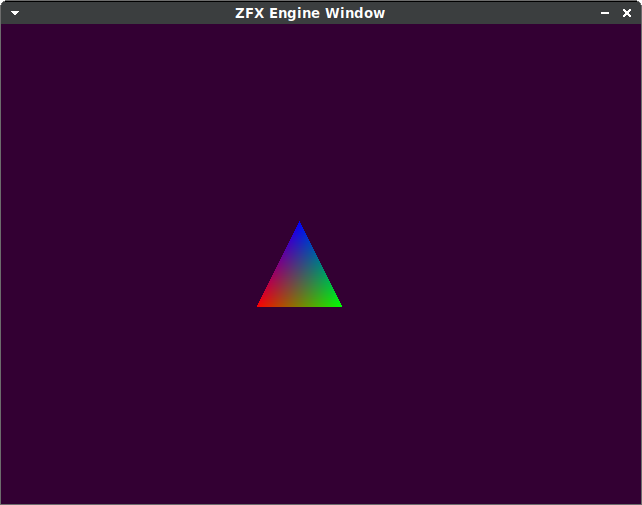
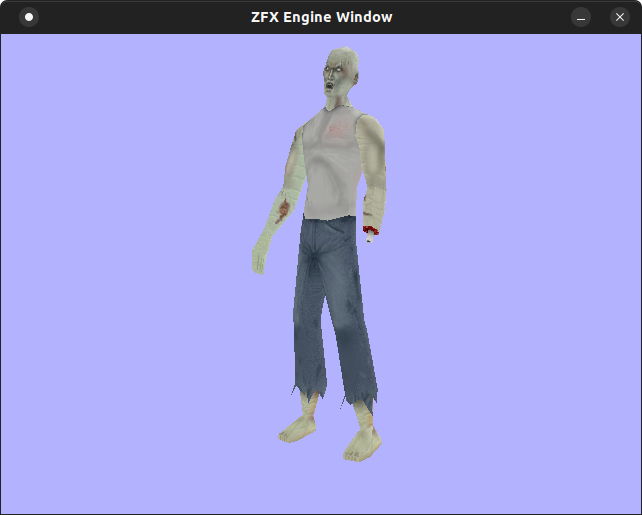
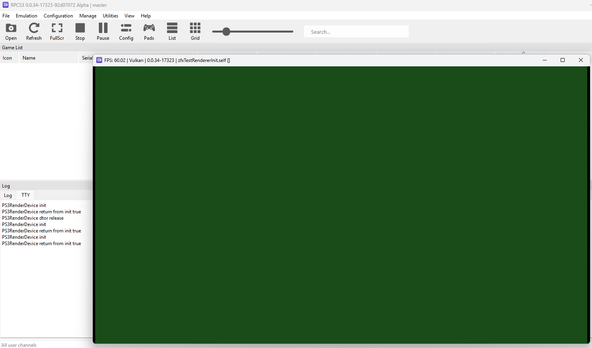
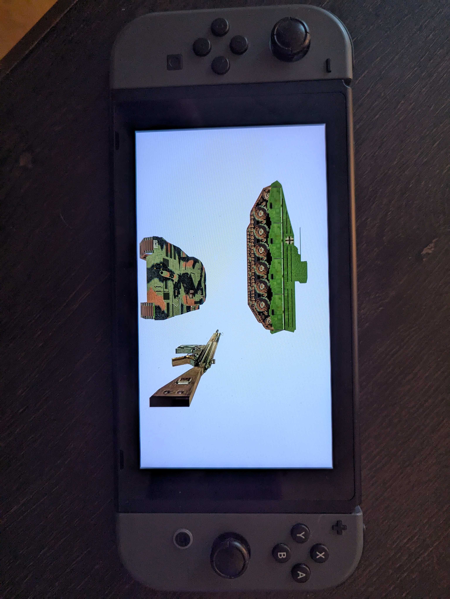

ZFX Engine OpenGL
Attempting an OpenGL implementation of ZFXEngine from "3D Game Engine Programming" by Zerbst,Duvel. I'd like to try and port it to PS3,Wii as well.

Chapter 4
07/31/2022
The book uses Visual Studio inline assembly syntax (__asm) for AVX instructions and AVX cpu detection. I instead used GCC inline asm with AT&T syntax ( https://www.ibiblio.org/gferg/ldp/GCC-Inline-Assembly-HOWTO.html) and then intrinsics. Example:
// book inline asm vector normalize:
w = 0.0f;
__asm {
mov esi, this ; vector u
movups xmm0, [esi] ; first vector in xmm0
movaps xmm2, xmm0 ; copy original vector
mulps xmm0, xmm0 ; mul with 2nd vector
movaps xmm1, xmm0 ; copy result
shufps xmm1, xmm1, 4Eh ; shuffle: f1,f0,f3,f2
addps xmm0, xmm1 ; add: f3+f1,f2+f0,f1+f3,f0+f2
movaps xmm1, xmm0 ; copy results
shufps xmm1, xmm1, 11h ; shuffle: f0+f2,f1+f3,f0+f2,f1+f3
addps xmm0, xmm1 ; add: x,x,f0+f1+f2+f3,f0+f1+f2+f3
rsqrtps xmm0, xmm0 ; recip. sqrt (faster than ss + shufps)
mulps xmm2, xmm0 ; mul by reciprocal
movups [esi], xmm2 ; bring back result
}
w = 1.0f;
// with intrinsics instead:
w = 0.0f; // clear w so it doesn't effect calculation
__m128 vec = _mm_loadu_ps(&x); // load x,y,z,w into vec
__m128 vecOrig = vec; // save copy of original values
vec = _mm_mul_ps(vec,vec);
__m128 tmp = _mm_shuffle_ps(vec,vec,0x4E);
vec = _mm_add_ps(vec,tmp);
tmp = _mm_shuffle_ps(vec,vec,0x11);
vec = _mm_add_ps(vec,tmp);
vec = _mm_rsqrt_ps(vec); // calc reciprocal square root
vecOrig = _mm_mul_ps(vecOrig,vec); // multiply by inv square root
_mm_storeu_ps(&x,vecOrig); // store result back in *this
w = 1.0f; // restore w
Chapter 6
08/29/2022
Have enough of the OpenGL render device, Vertex Cache, and Vertex Cache manager implemented to render a basic triangle. Learned you need to use glVertexAttribIPointer for integer attributes. Also learned the last argument to glDrawElements is used as a byte offset into the index buffer to use for drawing, assuming an index buffer is currently bound.
08/30/2022
Started the shaders for each vertex type in the vertex cache manager, vert cache manager render naked working.
08/31/2022
Render lines, points primitives working:
09/03/2022
Added ZFXModel class for s3d models, and fixed the uu/VERTEX struct shader. The vector-matrix multiplication order needed to be switched because of the ZFXMatrix implementation:
//gl_Position = uWvpMatrix * vec4(aPos,1.0);
gl_Position = vec4(aPos,1.0) * uWvpMatrix;
Most of the chapter 6 demo now works; not implemented are multiple windows/viewports and font drawing, also lighting:
09/14/2022
Initial Render Device CreateFont and DrawText working. Using fnt format font from https://angelcode.com/products/bmfont/, as the book implementation uses a built-in direct X library for loading Windows fonts.
stb image was not properly loading the tga format generated for some reason, and I had to convert the image to a bmp instead:
After that, we can successfully call DrawText():
09/15/2022
Started the chapter 7 demo (shaders). Just the basic unlit version for starters. Had to enable face culling and set the front face to clockwise instead of counter-clockwise:
glEnable(GL_CULL_FACE);
glFrontFace(GL_CW);
09/18/2022
Added two more chapter 7 demos - basic ambient lighting and multitexturing.

06/29/2023
Finished remaining chapter 7 demos - multiple point lights, grayscale filter, and bump mapping. For point lights, the book uses a multi-pass rendering technique to render 1 light at a time, starting with a base ambient lighting pass. I instead used a single shader with a hard-coded number of lights (2), and calculate point lighting using calculations from learnopengl. For the grayscale filtering demo, my glsl shader calculation is mostly the same as in the book, except I used a different set of values following this github gist. Finally, for the bump map demo, instead of transforming the light and other vectors into tangent space like in the book, I instead followed the learnopengl implementation and transformed the tangent vectors into world space within the vertex and fragment shader. To internally calculate the normal map texture from the input height texture, I used the already saved pixels in the current OpenGL texture class loaded by stbi, performed the processing on those, and saved the output file using stb_image_write to a png file:
The book calculates each normal via 3 pixels (current, right, below), however from reading online it's more common now to use a sobel filter on the current, top, bottom, left, and right pixels. The book's method seems to work fine at least for this demo.
Chapter 8
07/12/2023
Chapter 8 mostly finished. I initially was trying use and follow the book's custom model format, but I was getting a parsing error with the included example model that I couldn't figure out, so I switched to IQM using code from my HopsLib. The parse error from the book's cbf format (Chunk Based Format) was related to the amount of bytes contained in the vertices portion of the file. I confirmed I was reading the same amount of bytes indicated by the chunk header, but there were still bytes remaining after that before the end-of-chunk indicator (0x9999), shown highlighted in the hex editor:
Sense it was a custom format anyways, it didn't make sense to put alot of effort into it. Getting IQM models to work instead involved changing the HopsLib math objects with the ZFX versions and generating CVERTEX output vertices. By doing this I ran into a couple of bugs in the ZFXOpenGLVertexCache class related to skin/material selection and vertex buffer updating. I narrowed one down by using RenderDoc for the first time, which showed that the two IQM model vertex buffers from the test model contained identical vertices after the first frame, meaning the second buffer was being overwritten by the contents of the first buffer. This was because I was missing a call to glBindVertexArray prior to binding the buffer and updating the vertices. The second bug was that the second mesh's material wasn't being applied because its properties except the texture were identical, leading the code to believe a material change wasn't needed. The only thing left I think is a memory-out-of bounds error that seems to happen occasionally on Windows and every run on Linux.
08/01/2023
I am dumb. The memory error was that I was freeing the buffer the IQM data is stored in before the object is destructed:
buf = new uchar[hdr.filesize]; if (fread(buf+sizeof(hdr), ...) ... ... fclose(f); delete[] buf;
I didn't notice it was freed initially because the buf pointer wasn't set to null after being freed, so I thought it was still valid...
Now the IQM class just needs some cleanup, mostly related to time/frame tracking, which is hard-coded to update 1.0/60.0 seconds every frame regardless of the input time.
08/18/2023
Added support for glb meshes via Assimp. Was originally planning on adding b3d mesh support, as I found the mesh used in the book in this format here. Assimp apparently supports this format, however the animation code I have using assimp errored out due to "nodes" not counting as "bones". Converted the also-included milkshape 3d format (ms3d) model to glb by downloading Blender 2.66 from here (which included support for ms3d), exporting to dae, importing the dae to the default installed blender 3, and finally exporting to glb from there.
The assimp animation code still has an issue with the resulting converted dae and fbx files, also due to nodes vs bones data structures, but this is good enough for now I think. It also has issues with some parts of the animation being jerky/some weird frames, I'm guessing due to how I'm estimating keyframes with interpolation
08/24/2023
The zombie animation is fully working after converting it to IQM format. Finished chapter 9 - input system, using SDL2 and SDL2 joystick. Modified GetPosition() as the book only allowed for 1 object per joystick axis. I added an index argument as well to specify which analog stick/joystick to read. Also found out the joystick axes for an XBox 360 controller show up in the following order for SDL: 0 = left analog X axis, 1 = left analog Y axis, 2 = Left Trigger, 3 = right analog X axis, 4 = right analog Y axis, 5 = Right Trigger. The issue with this is GetPostion() takes in a ZFXPoint which reads both X and Y, and for the triggers there is only one axis. I re-ordered the read values so that the left and right trigger are paired as axes 4 and 5 instead of 2 and 5.
The demo for this chapter is fairly simple, just displays text to the screen of input values:
08/31/2023
Partial completion of chapter 10 (audio) and I think full completion of chapter 11 networking.
For audio, using SDL_Mixer, there is support to play a single sound/song at a time using "Mix_Music" objects. There is no 3D audio support currently. To support this, I would need to switch to use "Mix_Chunk" objects along with the "Mix_SetPosition" function, which takes in an angle and distance from the listener. Switching to chunks would also allow for multiple sounds to play at once.
For networking, I learned about Win32 WSA sockets, through following the book's implementation. It is pretty similar to POSIX sockets, so alot of the code between the Windows and Linux versions matches. Most of the differences I used macros/defines to map to the correct platform:
// ZFXNetworkDevice.h
#ifdef _WIN32
#define ZFX_USE_WIN_SOCKET
#else
#define ZFX_USE_POSIX_SOCKET
#endif
#ifdef ZFX_USE_POSIX_SOCKET
typedef int SOCKET; // POSIX socket file descriptor type
#define INVALID_SOCKET (-1)
#endif
#ifdef ZFX_USE_WIN_SOCKET
#include <winsock2.h>
#include <ws2tcpip.h>
#endif
// ZFXNetworkDevice.cpp
#ifdef ZFX_USE_POSIX_SOCKET
#include <sys/types.h>
#include <sys/socket.h>
#include <unistd.h>
#include <netdb.h>
#include <netinet/in.h>
#include <netinet/ip.h>
#include <arpa/inet.h>
#define ZFX_CLOSE_SOCKET close
#define ZFX_SHUTDOWN_READWRITE SHUT_RDWR
#define ZFX_SELECT_SUCCESS(ret) (((ret) != -1) && ((ret) != 0))
#define ZFX_SELECT_ERROR(ret) ((ret) < 0)
#endif
#ifdef ZFX_USE_WIN_SOCKET
#define ZFX_CLOSE_SOCKET closesocket
#define ZFX_SHUTDOWN_READWRITE SD_BOTH
#define ZFX_SELECT_SUCCESS(ret) (((ret) != SOCKET_ERROR) && ((ret) > 0))
#define ZFX_SELECT_ERROR(ret) ((ret) == SOCKET_ERROR)
#endif
...
#ifdef ZFX_USE_WIN_SOCKET
WSADATA wsaData;
WORD wVersion = MAKEWORD(2,0);
int nRes = WSAStartup(wVersion, &wsaData);
if (nRes != 0) {
printf("WSAStartup failed\n");
return false;
}
#endif
...
#ifdef ZFX_USE_WIN_SOCKET
WSACleanup();
#endif
...
shutdown(m_skSocket, ZFX_SHUTDOWN_READWRITE);
ZFX_CLOSE_SOCKET(m_skSocket);
...
Additionally, unlike the book which used the Windows event system for async socket read/writes, I instead made a polling background thread that works for both implementations, which uses "select" to check if any events have occured on the socket:
void ZFXNetworkDeviceImpl::EventPollThreadFcn()
{
fd_set set;
struct timeval timeout;
int ret;
while (m_bRunning)
{
timeout.tv_sec = 0;
timeout.tv_usec = 50;
if (m_Mode == NMD_SERVER) {
// check for any connection requests
FD_ZERO(&set);
FD_SET(m_pSockObj->GetSocket(), &set);
ret = select(m_pSockObj->GetSocket()+1, &set, nullptr, nullptr, &timeout);
if (ZFX_SELECT_SUCCESS(ret)) {
//printf("Poll thread calling OnAccept\n");
OnAccept();
}
// check for any messages from clients
for (int i = 0; iGetSocket(), &set);
ret = select(m_pSockObj->GetSocket()+1, &set, nullptr, nullptr, &timeout);
if (ZFX_SELECT_SUCCESS(ret)) {
//printf("Client Poll thread calling OnReceive\n");
OnReceive(m_pSockObj->GetSocket());
}
}
// let some other processing occur
std::this_thread::yield();
}
}
For the demo application, I didn't make the full chat or file transfer applications as they used the Win32 API. Instead, I just made a simple test command line program where the server and client send each other a couple of messages with some test data:
... Server read pkg of size 20 Server Pkg size: 4 Server Data: 0,1,2,3, Client read pkg of size 20 Client pkg size: 4 Client Data: 0x10,0x11,0x12,0x13, Server read pkg of size 20 Server Pkg size: 4 Server Data: 0,1,2,3, Client read pkg of size 20 Client pkg size: 4 Client Data: 0x10,0x11,0x12,0x13, Server read pkg of size 20 Server Pkg size: 4 Server Data: 0,1,2,3,
09/02/2023
Finished chapter 12 - movement. For the demo application, the data included on the book CD seemed to be missing the movement code and was identical to the chapter 6 demo. I chose to add a ZFXMCEgo controller (which is what the book calls the class for FPS style input) and directly binded movement to SDL2. I could have used our previously made input class, but sense it's just a chapter demo I was lazy. One note is that the input class seems to only allow forward and backward movement, not left and right, which seems kind of strange.
ZFXMCEgo* g_pMoveCtrl = nullptr;
...
// update time
Uint32 curTime = SDL_GetTicks();
Uint32 ticksPassed = curTime - lastTime;
float fElapsedTime = ((float)ticksPassed)/1000.0f;
// update input
g_pMoveCtrl->SetRotationSpeedX(0);
g_pMoveCtrl->SetRotationSpeedY(0);
SDL_Event e;
while (SDL_PollEvent(&e))
{
float fMoveSpd = 0.01f;
float fRotSpd = 0.001f;
if (e.type == SDL_QUIT) {
g_bDone = true;
} else if (e.type == SDL_KEYDOWN) {
switch (e.key.keysym.sym) {
case SDLK_w: g_pMoveCtrl->SetSpeed(fMoveSpd); break;
case SDLK_s: g_pMoveCtrl->SetSpeed(-fMoveSpd); break;
default:
break;
}
} else if (e.type == SDL_KEYUP) {
switch (e.key.keysym.sym) {
case SDLK_w: g_pMoveCtrl->SetSpeed(0.0f); break;
case SDLK_s: g_pMoveCtrl->SetSpeed(0.0f); break;
default:
break;
}
} else if (e.type == SDL_MOUSEMOTION) {
float fMouseMoveX = (float)e.motion.xrel;
float fMouseMoveY = (float)e.motion.yrel;
g_pMoveCtrl->SetRotationSpeedX(
-fMouseMoveY*fRotSpd
);
g_pMoveCtrl->SetRotationSpeedY(
-fMouseMoveX*fRotSpd
);
}
}
01/05/2025 - 9:30am - 11:00am, 12:00pm - 3:00pm, 8:00pm - 9:30pm
Revisiting this project, doing a reorganization/rewrite. Planning to do different console implementations (ps3, vita, switch) as I go, which I think will be easier than trying to go back and port everything afterwords.
Using gitlab for repo hosting as I've been trying it lately and testing it's CICD pipeline functionality. Also using CMake for build management (TODO - can I use CMake with the console ports?) and planning on putting all the code in a Zfx namespace, along with commenting thuroughly using Doxygen.
The new repo is https://gitlab.com/beedge19/zfxengineopengl . If I finish I will probably put it on the github repo also, which I believe is private at the moment (TODO make public).
Finished chapter 3 starting the Renderer and RenderDevice classes. PC and Switch both compiling the test application which clears the screen to green.
I got the switch build using CMake via https://github.com/vbe0201/switch-cmake/tree/rewrite which provides CMake templates for devkitPro switch development. I made a small modification to FindLibnx.cmake to add portlibs to LIBNX_INCLUDE_DIRS for the EGL opengl impl. Then to compile for switch, in the command line you run:
mkdir switchbuild && cd switchbuild
cmake .. -DZFX_SWITCH_BUILD=1 -DCMAKE_TOOLCHAIN_FILE=../DevkitA64Libnx.cmake
VERBOSE=1 cmake --build .
Which places libzfx.a and zfxTestRendererInit.nro in switchbuild/src. To run the program on the switch remotely with nxlink:
nxlink --address -s ./src/zfxTestRendererInit.nro
Also have initial Vita support implemented. Vitasdk includes a CMake configuration via /usr/local/vitasdk/share/vita.cmake and vita.toolchain.cmake. Similar to switch, the build process is:
mkdir vitabuild && cd vitabuild
cmake .. -DZFX_VITA_BUILD=1 -DCMAKE_TOOLCHAIN_FILE=/usr/local/vitasdk/share/vita.toolchain.cmake
VERBOSE=1 cmake --build .
01/06/2025 - 7:30pm - 9:30pm
Start initial PS3 impl. Found this github repo for ps3dev/psl1ght CMake toolchain configuration: https://github.com/zzanp/ps3-cmake/tree/master. Have not tested yet. placed the scripts/binaries from this repo in $PS3DEV/bin so they can be ran from the command line anywhere. TODO after testing, place instructions for this in README. Started code on the initial PS3RenderDevice implementation, mostly copying code over from https://bitbucket.org/williamblair/hopslib/.
01/07/2025 - 7:00pm - 9:30pm
Finish initial PS3 impl. The ps3dev cmake toolchain from github worked smoothly, however it didn't contain a command for .self generation, so I added a macro in my top level CMakeLists.txt to do this:
macro(ps3_create_self elfTarget)
add_custom_command(OUTPUT ${elfTarget}.self
COMMAND ppu-strip ${CMAKE_CURRENT_BINARY_DIR}/${elfTarget} -o ${CMAKE_CURRENT_BINARY_DIR}/${elfTarget} &&
sprxlinker ${CMAKE_CURRENT_BINARY_DIR}/${elfTarget} &&
make_self ${CMAKE_CURRENT_BINARY_DIR}/${elfTarget} ${CMAKE_CURRENT_BINARY_DIR}/${elfTarget}.self &&
fself ${CMAKE_CURRENT_BINARY_DIR}/${elfTarget} ${CMAKE_CURRENT_BINARY_DIR}/${elfTarget}.fake.self
DEPENDS ${elfTarget}
VERBATIM)
add_custom_target(${elfTarget}Self ALL DEPENDS ${elfTarget}.self)
endmacro()
Also, for the clear/background color, I didn't remember the format of the bytes for the argument to rsxSetClearColor. After some experimentation, the order turned out to be ARGB:
const u32 color =
0xFF000000 | // alpha
(u32(mClearColor[0]*255.0f)<<16) | // red
(u32(mClearColor[1]*255.0f)<<8) | // green
(u32(mClearColor[2]*255.0f)); // blue
rsxSetClearColor(mGcmCtx, color);
Finally, the cmake build process is:
mkdir ps3build && cd ps3build
ppu-cmake .. -DZFX_PS3_BUILD=1
cmake --build .
I also added a define check around the contents of the header/source files for the OpenGL/PS3 implementations so their contents are only processed on the correct platforms, without needing to conditionally include/exclude files in the CMake configuration.
I tested the PS3 build on both hardware and in rpcs3:
07/26/2025 - 7:00pm - 8:00pm
Started Aabb impl
07/27/2025 - 1:30pm - 2:30pm, 8:00pm - 8:30pm
Finished Aabb impl. Started and finished Polygon impl.
07/29/2025 - 7:30pm - 8:30pm
Add Quat impl, add missing plane/ray functions.
07/31/2025 - 8:00pm - 10:00pm
Start Skin Manager, Color, Material, Texture classes
08/01/2025 - 5:45pm - 6:15pm
Finish OGL skin manager, TODO PS3 skin manager
08/04/2025 - 10:00pm - 11:00pm
Initial PS3 skin manager impl.
08/05/2025 - 9:00pm - 10:00pm
Start chapter 6 demo, adding render device features (SetMode).
08/06/2025 - 6:30pm - 8:00pm
Continue chapter 6 demo. Add SetWorldTransform to render device, internal matrix members.
08/09/2025 - 4:30pm - 5:30pm
Continue chapter 6 demo. Add InitStage, GetResolution to render device, add Point class.
08/10/2025 - 7:30pm - 8:30pm
Continue chapter 6 demo. Start Model class.
08/16/2025 - 1:45pm - 3:00pm, 9:00pm - 10:00pm
Continue model class. Start vertex manager class, adding Shader functionality to render device.
08/17/2025 - 12:45pm - 1:45pm, 5:15pm - 6:15pm
Finish initial shader functionality in render device, untested yet. Loading leo s3d model in ch6 demo, not drawing yet.
08/18/2025 - 5:45pm - 7:15pm
Update ps3,vita,switch builds to include shaders/3d models. Chapter 6 demo loading the default Vertex structure shader.
08/19/2025 - 9:30pm - 10:15pm
Fix Windows shader loading bug, Model skin parsing bug.
08/20/2025 - 7:00pm - 9:00pm
Test rendering model class. Rendering successfully in OpenGL, PS3 version not working currently.
08/21/2025 - 6:00pm - 7:00pm
Fix PS3 issue - was sending the world matrix to the worldViewProj matrix uniform, and not returning true from the vertex cache manager render function.
08/24/2025 - 12:00am - 12:30am
Model class loading textures; modified to assume textures are located in the same directory as the model file itself.
08/24/2025 - 6:30pm - 7:30pm
Updated shaders and vertex cache manager to render with textures, working on all platforms:
08/25/2025 - 8:00pm - 9:30pm
Start bitmap font loading for BMFont support, for fonts generated from https://angelcode.com/products/bmfont/
08/27/2025 - 3:00pm - 4:00pm, 7:00pm - 8:00pm
OpenGL fnt rendering working, TODO PS3
08/28/2025 - 9:30pm - 10:30pm
PS3 fnt impl (untested), update cmake builds to include fnt assets